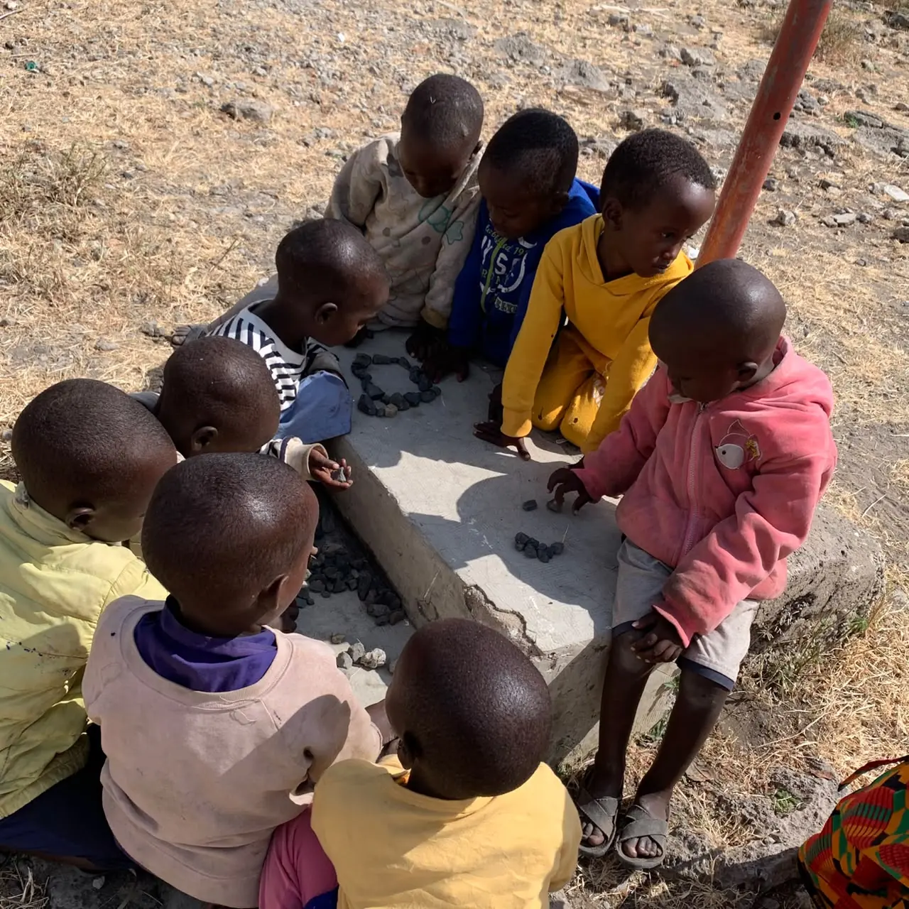
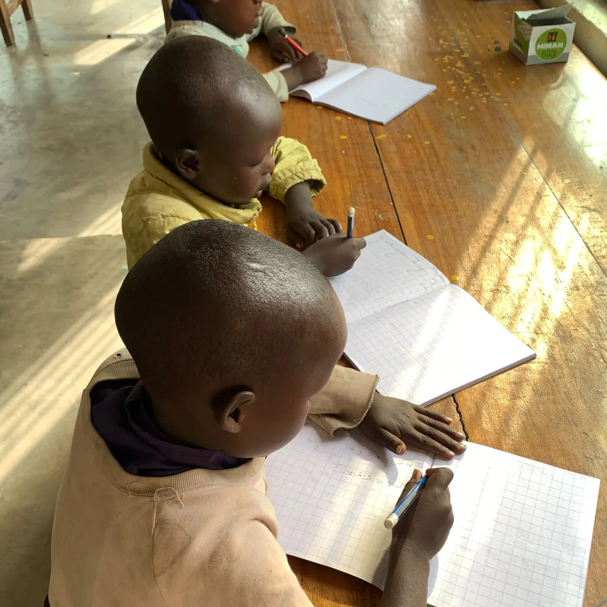
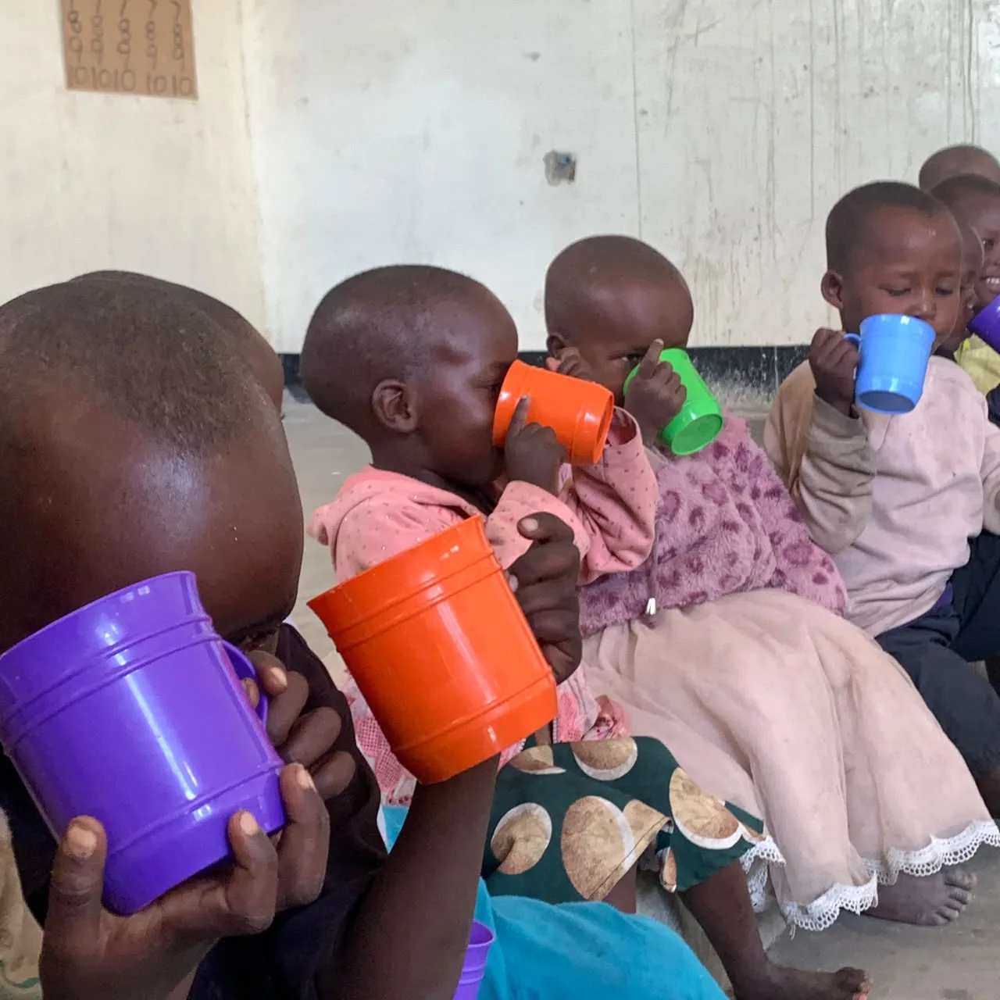
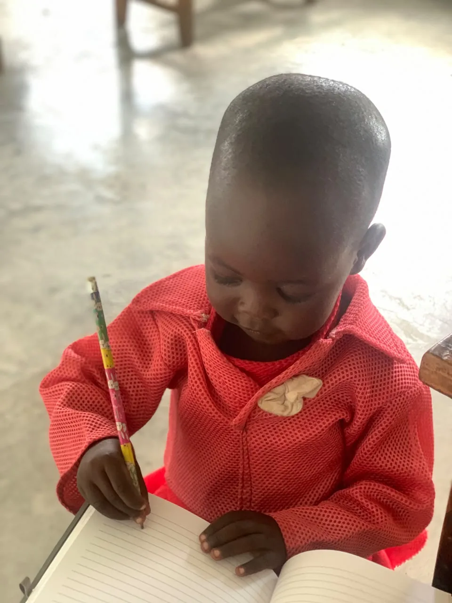

Oltukai Village · Monduli · Tanzania
Help us build early childhood education in the Maasai community
Empowering Maasai children through quality early childhood education and community development.
Empowering Maasai children through quality early childhood education and community development.
We started Nasaru because many children in our community do not have access to early childhood education. Distance, poverty and limited awareness of how much the early years matter keep them from starting on time.
Nasaru Child Foundation is a nonprofit organization in Oltukai Village, Monduli District, Arusha Region, Tanzania, serving children and families in the surrounding Maasai community. It was founded by Marina Laizer to increase access to early childhood education for children in underserved Maasai communities.
In many families here, education is not yet seen as a priority during the early years of a child’s life. Children may begin primary school much later than they should, without having had the chance to develop basic learning, communication, social and emotional skills.
We aim to close that gap. We provide early childhood education for children between approximately two and eight years old, and we work with parents and the wider community on the importance of early learning and child protection.
Where we stand today. We are currently using an affordable community provided space as a learning and activity centre, and these figures will change as we grow.
Most importantly, Nasaru has brought the conversation about early childhood education closer to families here, helping people recognize the value of a strong foundation before primary school.

Counting with stones outside. Classes run wherever there is space.
In underserved Maasai communities, access to early childhood education is limited by distance, poverty and the fact that early learning is not yet seen as a priority. The nearby public primary school often receives children when they are already eight to ten years old, because of crowded classrooms, a long walk and limited awareness.
Starting late makes it harder to settle into the classroom, to communicate confidently, to build friendships and to keep up. Some children become discouraged and drop out before finishing primary school. By their early teenage years, some girls face early marriage, while some boys leave the village to look for informal work.
Early childhood is when the habits of learning are formed. We cannot wait until children are eight or ten to start thinking about their education.
We believe that every child deserves the opportunity to learn, develop confidence and dream about their future.
Nasaru is working to create better early childhood education opportunities and community support in the Maasai community of Oltukai Village.
That means permanent classrooms and child friendly toilets, a nutritious daily meal for every child who attends, teachers trained in early childhood education, books and learning materials, and parents and local leaders who are part of running it.
We are building it step by step, and we are open about where we currently stand.
A better foundation builds a better future.
Marina Laizer, FounderOur longer term goals are permanent and well equipped learning facilities, reaching more children in Oltukai and the surrounding communities, enrolling more than 100 children as we grow, strengthening child protection and community engagement, and eventually establishing a fully developed primary school so children can continue their education in a safe and supportive environment.
Teaching children aged approximately two to eight years, and preparing them for a stronger start in formal primary school.
Improving the space we have so that it is safe, welcoming and supportive, and working toward permanent classrooms and child friendly toilets.
An ongoing daily feeding programme that supports children’s wellbeing and encourages regular attendance.
Educating parents, local leaders and community members about why early childhood education matters.
Play, reading, storytelling and other age appropriate activities that build confidence, curiosity and communication.
Raising awareness about child protection and children’s wellbeing across the community.
We are currently raising funds to [specific objective to confirm with Nasaru]. This campaign is helping us take the next step toward creating better educational opportunities for children in Oltukai.
We do not yet have established funders. Everything raised goes into building the project from the ground up, and we will report back here on what it paid for.



We are looking for people who want to help build something meaningful. There is more than one way in.
Above all, we are looking for people who are willing to learn from the community, respect Maasai culture and work alongside local people to create lasting change for children.
We are particularly looking for experience in:
We also welcome people without professional expertise who are willing to give their time, creativity and ideas.
We are looking to build long term relationships with schools, companies, NGOs, foundations, education organizations, local businesses and professionals who can offer expertise, materials or ongoing support.
Tell us what you can offer and we will tell you honestly what we need most.
Run a collection at your school, workplace or community group, or simply share our campaign with people who would care about it.
We will send you photos and updates you can use, so the people who gave can see where it went.
We believe that lasting change is built through teamwork and strong relationships.
Marina first visited the village where her mother was born at the age of sixteen, while she was still in secondary school. Very few children there were attending school, and among those who did, boys were more likely to be sent than girls.
She returned years later while studying Early Childhood Development Education, and after her diploma she worked as a teacher. For almost three years she talked about starting an early learning space without taking the first practical step, asking herself the same question on every visit.
How can I help my community?
Marina LaizerAs a Maasai woman who has seen the barriers to education in underserved communities first hand, she is building a safe and supportive place where children can learn, grow and develop their potential.
We are early, and we would rather show you the real timeline than pretend otherwise.
Marina founds Nasaru after almost three years of talking about the idea. Classes begin in a community provided space, with 15 children and one volunteer teacher. [founding date to confirm]
The daily porridge programme is running, and we launch a WhyDonate campaign to fund the next stage. It closes on 15 September 2026.
[next objective to confirm with Nasaru, for example: first permanent classroom, or teacher training]
Permanent and well equipped facilities, more than 100 children enrolled, stronger child protection, and eventually a fully developed primary school so children can continue their education here.
Marina posts updates from the village here, so you can see what is happening between campaigns.
A short update on what the children ate this month and who helped provide it.
Photographs and short stories from the families we work with.
Marina explains the thinking behind the project and what comes next.
Whether you want to volunteer, partner, donate or just ask a question, this reaches the person running the programme.